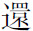
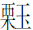
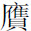
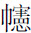
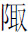
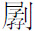

序
乙酉三月，山左趙公奉命守睦州，余假館於郡齋。太守公出淄川蒲柳泉先生聊齋志異，請余審定而付之梓。嚴陵環郡皆崇山，郡齋又多古木奇石。時當秋飆怒號，景物睄窕，狐鼠晝跳，梟獍夜嗥，把卷坐斗室中，青燈睒睒，已不待展讀，而陰森之氣，逼人毛髮。嗚呼！同在光天化日之中，而胡乃沉冥抑塞，託志幽遐，至于此極！余蓋卒讀之而悄然有以悲先生之志矣。按縣志稱先生少負異才，以氣節自矜，落落不偶，卒困于經生以終。平生奇氣，無所宣渫，悉寄之於書。故所載多涉諔詭荒忽不經之事，至于警世駭俗，而卒不顧。嗟夫！世固有服聲被色，儼然人類；叩其所藏，有鬼蜮之不足比，而豺虎之難與方者。下堂見蠆，出門觸蜂，紛紛沓沓，莫可窮詰。惜無禹鼎鑄其情狀，鐲鏤决其陰霾，不得已而涉想於杳冥荒怪之域，以爲異類有情，或者尚堪晤對；鬼謀雖遠，庶其警彼貪淫。嗚呼！先生之志荒，而先生之心苦矣！昔者三閭被放，彷徨山澤，經歷陵廟，呵壁問天，神靈怪物，琦瑋僪佹，以洩憤懑，抒寫愁思。釋氏憫衆生之顛倒，借因果爲筏喻，刀山劍樹，牛鬼蛇神，罔非説法，開覺有情。然則是書之恍惚幻妄，光怪陸離，皆其微旨所存，殆以三閭侘傺之思，寓化人解脱之意歟？使第以媲美齊諧，希踪述異相詫媺，此井蠡之見，固大盭於作者；亦豈太守公傳刻之深心哉！夫易筮載鬼，傳紀降神，妖祥災異，炳于經籍。天地至大，無所不有；小儒視不越几席之外，履不出里巷之中，非以情揣，即以理格，是沾沾者又甚於井蠡之見也。太守公曰：「子之説，可以傳先生矣。」遂書以爲序。
乾隆三十年，歲次乙酉十一月，仁和余集撰。
（原載青柯亭本聊齋志異）
弁言
丙寅冬，吾友周子季和自濟南解館歸，以手録淄川蒲留仙先生聊齋志異二册相貽。深以卷帙繁多，不能全鈔爲憾。予讀而喜之。每藏之行笥中，欲訪其全，數年不可得。丁丑春，携至都門，爲王子閏軒攫去。後予宦閩中，晤鄭荔薌先生令嗣，因憶先生昔年曾宦吾鄉，性喜儲書，或有藏本。果丐得之。命侍史録正副二本，披閲之下，似與季和本稍異。後三年，再至都門，閏軒出原鈔本細加校對，又從吴君穎思假鈔本勘定，各有異同，始知荔薌當年得於其家者，實原稿也。癸未官武林，友人鮑以文屢慫惥予付梓，因循未果。後借鈔者衆，藏本不能遍應，遂勉成以公同好。他日見閏軒，出以相贈，其欣賞爲何如！獨恨吾季和已赴九原，不獲與之商榷定論已。此書之成，出貲勷事者，鮑子以文；校讎更正者，則余君蓉裳、郁君佩先暨予弟皋亭也。
乾隆丙戌端陽前二日，萊陽後學趙起杲書於睦州官舍。
（原載青柯亭本聊齋志異）
刻聊齋志異例言
一，先生是書，蓋仿干寶搜神、任昉述異之例而作。其事則鬼狐仙怪，其文則莊、列、馬、班，而其義則竊取春秋微顯志晦之旨，筆削予奪之權。可謂有功名教，無忝著述。以意逆志，乃不謬於作者，是所望於知人論世之君子。
一，是編初稿名鬼狐傳。後先生入棘闈，狐鬼羣集，揮之不去。以意揣之，蓋恥禹鼎之曲傳，懼軒轅之畢照也。歸乃增益他條，名之曰志異。有名聊齋雜志者，乃張此亭臆改，且多删汰，非原書矣。兹刻一仍其舊。
一，先生畢殫精力，始成是書。初就正於漁洋，漁洋欲以百千市其稿。先生堅不與，因加評騭而還之。今刻以問世，並附漁洋評語。先生有知，可無仲翔没世之恨矣。
一，是編向無刊本，諸家傳鈔，各有點竄。其間字斟句酌，詞旨簡嚴者有之；然求其浩汗疏宕，有一種粗服亂頭之致，往往不逮原本。兹刻悉仍原稿，庶幾獨得廬山之真。
一，編中所述鬼狐最夥，層見叠出，變化不窮。水佩風裳，翦裁入妙；冰花雪蕊，結撰維新。緣其才大於海，筆妙如環。
一，編中所載事迹，有不盡無徵者，如姊妹易嫁、金和尚諸篇是已。然傳聞異辭，難成信史。漁洋談異，多所採摭，亦相逕庭。至大力將軍一則，亦與觚賸·雪遘差别。因並録之，以見大略。
一，是書傳鈔既屢，别風淮雨，觸處都有，今悉加校正。其中文理不順者，間爲更定一二字。至其編次前後，各本不同，兹刻衹就多寡酌分卷帙，實無從考其原目也。
一，原本凡十六卷，初但選其尤雅者厘爲十二卷；刊既竣，再閲其餘，復愛莫能舍，遂續刻之，卷目一如其舊云。
一，卷中有單章隻句，意味平淺者删之，計四十八條；從張本補入者凡二條。佳句已盡入錦囊，明珠實無遺鐵網矣。
一，聞之張君西圃云：「濟南朱氏家藏志異數十卷。」行將訪求。倘嗜奇之士，尚有别本，幸不吝見遺，當續刻之，以成藝林快事。
萊陽趙起杲清曜謹識。
（原載青柯亭本聊齋志異）
刻聊齋志異紀事
荷邨先生丞杭時，嘗出聊齋志異一書相示，且將進梓人焉，予頗慫惥之。及擢守嚴陵，政通人和，始從事於梨棗。清俸不足，典質以繼之，然竟不克簣成而卒。先生弟皋亭屬予竟其業。比竣厥工，距道山之遊七閲月矣。覽先生自序，方以周君季和不及見爲恨，詎意墨瀋未乾，風流頓盡，予之痛先生，復有甚於先生之痛季和也。悲夫！
先生性恬澹，而獨淫於書，故與予交尤莫逆。嚴陵距杭三百里，借書之伻嘗不絶於道。志異之刻，余君蓉裳在幕中商榷爲多。比蓉裳計偕北上，偶一字之疑，亦走函俾予參定焉。今手書滿箧，觸目凄然，輒有山陽夜笛之感。
初先生之梓是書也，與蓉裳悉心酌定，釐卷十二，予第任讎校之役而已。今年正月，晤先生於吴山之片石居，酒闌閑話，顧謂予曰：「兹刻甲乙去留，頗愜私意，然半豹得窺，全牛未睹，其如未厭嗜奇者之心何！取四卷重加審定，續而成之，是在吾子矣。」予唯唯。後五月，十二卷始蕆事，而先生遽卒。未竟之緒，予竭蹶踵其後，一言之出，若有定數。嘻，異矣！
嚴郡試院，去郡衙半里許，非試事，則魚鑰塵封，重門蛛罥而已。五月十有八日，將試童子，先期遣隸掃除。時曉色初分，重扃乍啟，瞥見一緋衣人，高冠峨峨，端拱庭除。隸咸驚仆，人亦隨滅。至日，命題，鍵試，先生飲食言笑如常時，迨受卷未終，竟以暴卒。卒之前一日，遍謁郡僚，備盡覼縷，如話别者。然庫有公帑千金，悉命移貯縣庫，經畫從容，若有先告，何其異也！但不知緋衣何神耳。
五月朔日，皋亭先生夢至一所，經歷堂奥，皆非夙遊，奄然竟逝，魂已離舍，木立尸前，心復自知其死，顧亦無所繫戀。獨惜剞劂之工未竟，悲從中來，一慟而醒。明日以告先生。先生方握管撰序，聞之默然良久，若不能無動於中者。後先生凶問至署，皋亭奔赴，撫尸慟哭，俯仰之頃，悉符夢境。
先生既卒於試院，舉家惶遽無措。侍姬陳氏，哀哭盡禮，遂投繯死。家人驚救，已無及矣。後先生靈槥歸里，以阻於道遠，遂卜葬澄清門外。嗟乎，冉冉貞魂，偕從泉下，纍纍遺冢，寂寞江濱，可哀也已！然而苦心勁節，已足與雲山江水俱長。表揚芳烈，吾黨之責也。因附記於此。
乾隆丙戌十一月望前三日，得閑居士鮑廷博以文識。
（原載青柯亭本聊齋志異）
跋
志異十六卷，先大父柳泉先生著也。先大父諱松齡，字留仙，别號柳泉。聊齋，其齋名也。幼有軼才，學識淵穎；而簡潛落穆，超然遠俗。雖名宿宗工，樂交傾賞。然數奇，終身不遇，以窮諸生授舉子業，潦倒於荒山僻隘之鄉。間爲詩賦歌行，不愧於古作者；撰古文辭，亦往往標新領異，不勦襲先民；皆各數百篇藏於家。而於耳目所睹記，里巷所流傳，同人之籍録，又隨筆撰次而爲此書。其事多涉於神怪；其體仿歷代志傳；其論贊或觸時感事，而以勸以懲；其文往往刻鏤物情，曲盡世態，冥會幽探，思入風雲；其義足以動天地、泣鬼神，俾畸人滯魄，山魈野魅，各出其情狀而無所遯隱。此山經、博物之遺，遠遊、天問之意，非第如干寶搜神已也。初亦藏於家，無力梓行。近乃人競傳寫，遠邇借求矣。昔昌黎文起八代，必待歐陽而後傳，文長雄踞一時，必待袁中郎而後著。自今而後，焉知無歐陽、中郎其人者出，將必契賞鋟梓，流布於世，不但如今已也。則且跂予望之矣！
大清乾隆五年，歲次庚申春日，孫立德謹識。
（原載青柯亭本聊齋志異）
跋
余家舊有蒲聊齋先生誌異鈔本，亦不知其何從得。後爲人借去傳看，竟失所在。每一念及，輒作數日惡；然亦付之阿閦佛國而已。一日，偶語張仲明世兄。仲明與蒲俱淄人，親串朋好，穩相浹，遂許爲乞原本借鈔，當不吝。歲壬寅冬，仲明自淄携稿來，纍纍巨册，視向所失去數當倍。披之，耳目益擴。乃出資覓傭書者亟録之，前後凡十閲月更一歲首，始告竣。中間讎校編次，晷窮膏繼，揮汗握冰，不少釋。此情雖癡，不大勞頓耶！書成記此，聊存顛末，並識向來苦辛。倘好事家有欲攫吾米袖石而不得者，可無怪我書慳矣。
雍正癸卯秋七月望後二日，殿春亭主人識。
〔校記〕文見鑄本、遺稿本。文中「膏繼」，鑄本作「晷繼」。
跋
余讀聊齋誌異竟，不禁推案起立，浩然而嘆，曰：「嗟乎！文人之不可窮有如是夫！」聊齋少負艷才，牢落名場無所遇，胸填氣結，不得已爲是書。今觀其寓意之言，十固八九，何其悲以深也！向使聊齋早脱韝去，奮筆石渠、天禄間，爲一代史局大作手，豈暇作此鬱鬱語，託街談巷議，以自寫其胸中磊塊詼奇哉！文士失職而志不平，毋亦當事者之責也。後有讀者，苟具心眼，當與予同慨矣。
雍正癸卯秋七月，南邨題跋。
〔校記〕文見鑄本、異史本、遺稿本。稍有岐異：「聊齋誌異」，異史本作「異史」。「不可」，遺稿本作「多」。「觀其」，遺稿本作「讀其書」，異史本作「讀其」。「真職」，異史本、遺稿本作「失職」。「後有」，遺稿本作「後」。
跋
昔阮瞻作無鬼論，而鬼即來；干寶撰搜神記，而神如在。故司糾奉命，烏府之柏台遂空；而浮提稱王，寇公之蒨桃欲葬。玄機雲涌，冢中王弼重來；妙論風生，穴處雄狐却走。山精水怪，不妨以假爲真；牛鬼蛇神，未必將無作有。彼狗孝順、猿代役，亦屬物理之常；即頂書山、手畫花，無非立法之妙。總之：見怪不怪，我正即能辟邪；怕鬼有鬼，疑心適以殺子。惜世無文帝，賈生之前席全虚；且騎少青騾，曼卿之蓉城乏主。然則鷁飛星隕，知我者其惟春秋乎？衹此魯連、曹丘，得斯人可與言詩矣。
乾隆辛未秋九月中浣，練塘老漁識。
（此上跋文三篇原載鑄雪齋抄本聊齋志異）
聊齋志異遺稿序
將欲區文章之善否，不必以理法繩也，但取而讀之：讀未終篇，已厭其詞之長，必弗善矣；讀既終篇，猶嫌其詞之短，必甚善矣；至於全卷讀竟，心悵然如有失，深恨作書者之不再作，刻書者之不再刻，則善之善者也。聊齋正編行世已久，其於小説，殆駸駸乎登唐人之堂而嚌其胾，使觀者終日嘯歌，如置玉壺風露中，雖浮甘瓜於清泉，沉朱李於寒水，不是快也。然僕讀之而憾其少，則以爲人心無厭之求，固不得遂，亦置之無可奈何而已。今乃得其遺稿若干首，奇情異采，矯然若生，而亡是公烏有先生又于于然來矣。黎陽段君雪亭，毅然以付梓自任，斯豈獨聊齋之知己，抑亦衆讀聊齋者所鬱鬱於中，而今甫得一伸者也。故樂爲編次而序之。
鬲津劉瀛珍識。
聊齋志異遺稿序
留仙公生擅仙才，錦在心而不竭；異史氏文參史筆，綉出口而遂多。當其倒醽醁而散墨，倚花木以揮毫，陋志怪於三齊，追新聞於南楚，豆棚瓜架，雨夕風晨，固已邀鑒賞於漁洋，不啻策衙官於屈、宋。矧夫夢羽衣於赤壁，又見坡公；訊修竹於東橋，重來杜老。昌黎毛穎，既磨墨而晨鈔；子厚梓人，復削青而夜刻。剩山殘水，著屐問箬村之酒；散仙逸鬼，呈形侑顧渚之茶。譬春蠶之作繭，見物斯成；似秋雁之銜蘆，聞聲即至。斯其雅趣詼奇，能啟文心於齏臼；豈第清詞俶詭，堪發妙想於子虚？聽彼散亡，不惟嘆幽光之晦；任其湮没，更恐招靈鬼之啼。幸有黎陽騷客，德水逸人，發思古之情，寓表微之意，用鏤梨棗，並貯牙簽。真覺千秋郢社，精神不間琴樽；十載黄州，咳唾無遺珠玉。人皆莞爾，僕亦欣然。嘉其豪興，聊爲酬以片詞；玩此風華，更請藏之什襲。
姑孰者島胡泉序。
重抄聊齋志異遺稿序
留仙志異一書，膾炙人口久矣。余自髫齡迄今，身之所經，無論名會之區，即僻陬十室，靡不家置一册。蓋其學深筆健，情摯識卓，寓賞罰於嬉笑，百誦不厭。先乎此、後乎此之類書，無慮汗牛充棟，竟無能望其肩背者，是筆墨骨格，未許輕造也。顧才大如彼，知尋常傳文，不能以一介寒儒，表行寰宇，躊躇至再，未可如何，而假干寶搜神，聊志一生心血，欲以奇異之説，冀人之一覽，其情亦足悲矣。是書流傳既久，而俗坊吝於鉛槧，將其短類半删去之，漸久而失愈多，殊堪恨恨。然好事者尚可廣搜遠紹，符其原額。己巳春，於甘陵賈氏家獲睹雍正年間舊鈔，是來自濟南朱氏，而朱氏得自淄川者。内多數十則，平素坊本所無。余不禁狂喜。遂假録之，兩朝夕而畢。後復核對各本皆闕，殆當時初付剞劂，即亡之矣。好事之家，得其一鱗片甲，不啻天球，余何忍聽其湮没，而不公諸海内乎？然欲付梨棗而嗇於資，素願莫償，恒深歉悵。兹於道光癸未，與德州劉仙舫雨夜捉膝言及之；仙舫毅然醵金，余遂得於甲申秋録而付梓，俾遺珠得

合浦，不但爲當時好事者之一快，即於風清月朗時，以杯酒酹告清曜先生之靈，九原有知，應亦大暢其未償之願也矣。道光四年，歲次甲申仲秋，黎陽雪亭段

書於清源。聊齋志異遺稿序
諸小説正編既出，必有續作隨其後，雖不能媲美前人，亦襲貌而竊其似。而蒲聊齋之志異獨無。非不欲續也，亦以空前絶後之作，使唐人見之，自當把臂入林，後來作者，宜其擱筆耳。兹幸獲其遺稿數十首，事新語新，幾於一字一珠，而又有可以感人心、示勸戒之意。反復披玩，真覺蒲先生鬚眉若生。時方夏日，對此清風颯然，令人憶蜀宫人納凉詞，所謂「冰肌玉骨凉無汗，水殿風來暗香滿」也。維時雪亭段君，踴躍付梓，快人快事，其有古人不見我之思乎？抑念兩美必合，聊齋之後復有聊齋，此亦天地間不可無之佳話，以視他書之贅而續之者何如也？諸友好批閲之餘，間述所聞，附記於後；僕亦登記數則。非敢幾聊齋萬一，抑以事有不可没者，爰率爾爲之，以詳其顛末云爾。
道光閼逢涒灘閏七月上浣，清源陳廷機序。
聊齋志異遺稿例言
一，是書本雍正年鈔本，則未刻之前，已貴洛陽紙價矣。的係原物，斷非後人剽竊。
一，所記之事，國朝居多，間及明季，其間未見叙明何代者，有一二字未敢抬寫，又未敢接寫，不得已以鄙意易而隱之。若鴞鳥一則，係康熙年事，聖天子不可不出格。白蓮教一則，明言徐鴻儒，則大兵不可不空格。意刊書之時，去此未遠，不便刻入，因成割愛歟？
一，此本係余依星巖手鈔校正無訛。第去原本已三鈔矣。魯魚虚虎，應不能免。苟有更得真本寄示更正，則幸甚。
一，所見聊齋刊本不一，有截其序者，有去其題詞、例言、小傳者，有删其短篇者，有分門别類，比之情史者，苟非自作聰明，即欲省其鉛槧，致令廬山面目，漸失其真。余薈萃各本核對，並無復見重出。倘另有善本續刊者，或爲已刊，亦祈見示，以便削除。
一，原刻十六卷，分沈、浸、穠、郁等字；兹本雖條則不多，亦遵其例，分上、窺、姚、姒四卷。
一，張榆村墓表，得之雅雨山左詩鈔；然文義不備，意其節録，未得全稿。其詩文若干集，亦未知刊否。如片紙僅存，會當求而梓之，以永其傳。
黎陽段雪亭識。
註釋聊齋志異序
小説家書存於今者，干令升搜神記近俗易解，然是

本。唐人説如集異、劍俠及虬髯、黄衫、紅綫、李娃等傳，叙次濃烈，奕奕如生，而非淺學者所能盡讀。以其逮事典奥也。淄川蒲留仙氏志異一書，足以追比前人，迥非近時小説家所能及。其鋪叙清晰，舉重若輕，辭足以達難離之情，故覶縷褻事，及閨房牀笫之私，無不摹繪盡致，記無關學問，而筆意實亦可喜，致世多好之，然其多攬古書，取用宏肆，儉腹者一時索解不得，不免觸處有棘目之憾。江寧何地山先生以博雅之才，著作餘閑，爲之考訂註釋，積久得若干條，刊爲别本流布之，即是爲餉貧之糧，振聵之鐸，所謂一滴水可知大海味者，斯註有焉。道光歲次己亥四月八日鄞縣沈道寬叙。
註釋聊齋志異凡例
一、註解之作，因此書愛看者多，而偶一字忘其解，便勞思索，而興趣輒减。故註不嫌多，解不嫌陋。惟重見叠出之典，註見五六次者，即不復註。
一、音義謹遵康熙字典。所音字易識，即註音字；所音字較本字更難識，即照註反切，或云音近何字。
一、凡書皆係盡前註解，後有重複僅註見前某卷某篇。往往前半字嫌太多，後半紙嫌無用，因將重複者，前卷一半註見後卷。
一、所註雖子史，而膾炙人口者，亦有不註處；雖四子書無人不讀，而文義難解者，亦必詳註。
一、零字，一字一解者，與其註見某卷某篇，不如每篇重註二三言，刻字既省，看書亦便。
一、字畫改去俗體，又不盡从古體，欲雅俗共賞也。如「温」、「證」等字，上概加「疒」；「説」、「誤」等字，旁或从「心」，相沿已久，改正轉滋疑惑。
一、此書愛看者多，各省均有刻板。其中以訛傳訛，甚至删改增添，錯謬不可枚舉。余則於可疑處僅存之，俟覓得原本，再爲改正。
一、此書本不急於梓行，爲因諸友窺見，不能匿；梓後復與沈栗仲、龍卧子、姚蘭坪、何芰亭諸友，再校一過，補註數十條。
聊齋志異新評自序
憶髫齡時，自塾歸，得聊齋志異讀之，不忍釋手。先大夫責之曰：「童子知識未定，即好鬼狐怪誕之説耶？」時父執某公在坐，詢余曷好是書。余應之曰：「不知其他，惟喜某篇某處典奥若尚書，名貴若周禮，精峭若檀弓，叙次淵古若左傳、國語、國策，爲文之法，得此益悟耳。」先大夫聞之，轉怒爲笑。此景如在目前，屈指四十餘年矣。歲己卯，入詞垣，先後典楚、浙試，皇華小憩，取是書隨筆加點，載以臆説，置行箧中。爲友人王薆堂、錢辰田兩侍讀，許信臣、朱桐軒兩學使見而許之，謂不獨揭其根柢，於人心風化，實有裨益。囑付剞劂而未果。兹奉命莅任江南，張桐厢觀察、金瀛仙主政、葉素庵孝廉諸友，復慫恿刊布，以公同好。余亦忘其固陋，未知有當於聊齋之意與否。書成，爰記其顛末如此。
時道光二十二年夏五月既望，廣順雲湖但明倫識於兩淮運署之題襟館。
序
聊齋評本，前有王漁洋、何體正兩家，及雲湖但氏新評出，披隙導竅，當頭棒喝，讀者無不俯首皈依，幾於家有其書矣。然竊觀聊齋筆墨淵古，寄託遥深，其毫顛神妙，實有取不盡而恢彌廣者。仁見仁、智見智，隨其識趣，筆力所至，引而伸之，應不乏奇觀層出，傳作者苦心，開讀者了悟，在慧業文人，錦綉才子，固樂爲領異標新於無窮已。吾合馮遠村先生手評是書，建南黄觀察見而稱之，謀付梓未果。先生一官沈黎，寒氈終老，没後僅刻晴雲山房詩文集、紅椒山房筆記，其他著述今皆散佚無存，惟是書膾炙人口，傳抄尚多副本。同治八年，州人士取篇首雜説數十則及片雲詩話刊行，而全集仍待梓也。予於親串中偶得一部閲之；既愛其隨處指點，或一二字揭出文字精神，或數十言發明作者宗旨，不作公家言、模棱語，自出手眼，别具會心，洵可與但氏新評並行不悖。因照但氏本增入，縮爲十二卷，箋題聊齋志異馮但合評。工既竣，而爲之略叙梗概云。
時光緒十七年仲春月下浣，合陽喻焜湘蓀氏叙於補拙書屋之竹深處。
（原載喻焜刻聊齋志異合評）
詳註聊齋志異圖咏序
聊齋志異一書，齊諧志怪之作也。怪，則聖人且不語，又何足圖？然而山海之經，相傳爲伯益所著，而實亦無可考證。後人則從而附益之。詮註不足，加以圖繪。其中怪怪奇奇之物，大都出於意匠之經營，閲者披其圖而證其説，可以增長見聞。爾雅先不見重於世，自終軍鼮鼠之辨，蜚聲漢廷，始與六經並重，後之人亦有取而圖其形者。水草之區别，鳥獸之離奇，莫不可按圖而索焉，圖之爲用大矣哉！聊齋所志，其事非盡爲刑天舞戚，其人非盡屬牛鬼蛇神，則其圖之也，亦不必皆如禹鼎之鑄姦，温犀之燭怪，不過就其事迹，模其神情，觀其事傳而其人亦傳，此廣百宋齋主人聊齋志異圖咏之所由作也。主人以尚友爲志，讀古人書，必欲知其爲人，爰請名手，就志異全書每幅各繪一圖，亦既窮形盡相，無美不臻，又于每圖各繫七絶一首，抉海内詩人之心肝，爲圖中之眉目，以是遊目騁懷，洵可樂也。復以舊註綴於每篇之後，檢查尚恐費事，因而别出心裁，摘録於每句之下，令人一覽可以了然，其用心可謂苦矣。書成，丐序於余，余曰：「是於山海、爾雅之外，别開生面者也。以余襪綫才，得以附聊齋驥尾，何快如之！」遂援筆而爲之序。
光緒十有二年太歲在柔兆閹茂日躔大梁之次，古越高昌寒食生撰。
聊齋志異摘抄序
聖賢之道，中庸而已。子臣弟友之事，日用常行之理，布帛菽粟之文，無所謂異也。所謂異者，必其耳目所未經，考詢所不及，是所謂無稽之言弗聽者，而何可以傳諸海内爲哉？然天下固有事異而理常，言異而志正，則不妨與聖賢中庸之道並行而不悖。今夫庸夫俗子，與之言聖賢切近之理，漠然無所動於中，及聞稗官野史之忠臣烈士、義夫節婦，遂不覺慷慨激昂，悲歌泣下，一若情不能自已者。即一二英敏之儒，搜奇立異，厭故喜新，視六經紛綸，爲古人糟粕；及與之歷諸幻妄，幾於縛船駡鬼，呵壁問天，而泊無所歸。乃漸覺倫常之平實可喜，則莊語之不悟而嫚言之，非所謂相反而適以相成者歟？非所謂窮諸幻境而反其真者歟？且天下之大，何所不有？文人學士發一縷之心思，雕刻萬類，牢籠衆有，詭怪離奇，不可名狀；而實則古今之遥，六合之内，原有其人其事，以供才人之發抒。且既無其人，而未始無其事；無其事，而未始無其理。則無一事非寓言，亦無一事非實境也。世之人，域己以自封，直欲使天下事，盡如吾見見聞聞，而非是，則震而驚之，毋乃非少所見之故乎？柳泉蒲子，以玩世之意，作覺世之言，握化工之筆，爲揶揄之論。凡其所言孝弟廉節，達天知命，與夫鬼怪神仙，因果報應之説，無不可以警醒頑愚，針砭賢智，即所謂事異而理常，言異而志正者，豈得以言之無稽而置之哉？第其書浩漫，亥豕既多，甲乙紊亂，又以未經付梓，抄寫傳訛，浸失其舊。或前後枘鑿，而神理不相貫注；或頭緒繁劇，而賓主不甚分明。猶之名葩雜於蕪草，嘉植蔓於藤蘿，實可惜也。辛巳春，余給事歷亭，同姓約軒假得曾氏家藏抄本，公退之余乃擇其可觀者删繁就簡，分門别類，手抄而點竄之。幾閲寒暑，始得成帙。哦誦之暇，聊以自娱。同人慫恿付梓，公諸同好，置之案頭，不特可以破拘墟之習見，悟理境之無方，而于世道人心，亦不無少補云。
時乾隆丁亥孟夏横山王金範書於周村且居書室。
聊齋志異摘抄跋
聊齋志異爲淄川蒲柳泉先生所著，聞書初成，即有以千購之者，柳泉弗受也。柳泉就聞見所及，以風馳電掣之椽筆，寫牛鬼蛇神之情狀，抑亦借無稽之談，發其無聊之思耶？憶丁卯歲適遭悼亡，長夏傷神，友人遺余抄本讀之，悲懷稍釋。惜無好事者登諸梨棗，與齊諧志怪、虞初紀異並垂爲憾。忽忽廿載，吾友王子横山先生嗜古好奇，學優遇嗇，殆與柳泉後先同轍，爰取是書，删而訂之，得十八卷，名曰「摘抄」。筆雖遊戲，而寓覺世牖俗之心焉。則與柳泉之徒侈詞富，相去有徑庭矣。
長洲同學寅弟宋允睿跋。
（原載聊齋志異摘抄）
擇翻聊齋志異序
滿文，乃我朝本土之語言，其形合陰陽，音通律吕。有此以來，首批巴克什陸續涌現，奉旨逐次翻譯四書五經、綱紀淵鑒諸書，啟迪後人，故創百世未有之奇書。嗚呼，何其聖哉！余禀性魯鈍，既未通覽經史，亦不習詩賦，而因家貧年壯，暫習滿文，以謀差行事耳。不意考中翻譯舉人，再中翻譯進士。公餘之暇，瀏覽各類書籍，尤癖嗜聊齋志異。此何謂耶？該書效司馬遷之志，取春秋之義，諸凡廣衍顯揚，喻世警人，易過遷善，于戲謔、諷諭諸言中，均溶勸誡之理，實有功於名教矣。竊思將此書之奇意隱理以滿文譯之，則先賢所創之妙境，不知能否昭彰而盡，故立意雖久，尚未敢着筆。後求得先師明右圃先生所譯花神等四篇閲看，果然傳神形外，恰合文中之奇，由此文心涌起。然因予才疏學淺，猶恐他人齒冷。丙戌年于盛京工部主事任上，每逢花開月明之際，輒取一册翻閲，擇易曉者譯之，日居月儲，積累諸篇。雖向師友求正，仍恐不能盡善；唯期學者文士閲後，去非存是，使無微瑕。倘同好與共，亦爲滿洲才士之一快事也。是爲序。
道光二十八年正月吉日五費居士題。
（原載滿文本聊齋志異）
聊齋志異註自序
余童年從先君讀，課業之暇，聞諸同人談鬼狐仙怪事，靡靡可聽。初不知有聊齋志異，其後聞之而喜，又以不得讀爲憾；及長，讀之，如有夙緣，神與相迎，而若或引之，幾至忘啜廢枕。噫！亦癖矣。然癖其書，而愈博其徵引。披閲之下，因取事之易知者，旁行側註之。嗣後隨所繙閲，有與卷中徵引相符者，輒簽於卷尾。巾箱綴輯，積日彌多。朋輩見之，悉慫恿卒業。搜奇摭異，靡間寒暑。歷三載而始粗就，謂非癖之尤者哉？雖然，家無藏書，脩羊不行，挂漏免乎？聊爲樵路之導也可。倘有同余癖者相視而笑，用貺以所不逮，則幸甚。
道光五年歲在旃蒙作噩娵月文登後學吕湛恩識。
聊齋志異註序
壬午冬，余莅文邑。越二年，重修邑志，得邑明經吕岐封先生手訂舊本。見其考據精覈，學有本原，心甚佩之。既而詢悉，其嗣君輩俱能讀父書，掇巍科；孫行之食餼貢成均者，踵相接，未嘗不嘆家學淵源，其來有自。吕子叔清，係岐封先生少子也，髫年應試，受知於阮芸臺先生，補博士弟子員，蜚聲黌序有年矣。平生務爲根柢之學，屢躓棘闈，而其志益勵，閉關却埽，足不入城市。余心識之，而未之見也。乙酉春，偶從博庵王少府案頭，見有聊齋志異註十六卷，詢知爲吕子叔清所輯。余喜甚，暇日索而閲之，嘆賞不置，因慨然曰：「異哉！吕子之爲是註也。夫人著書立説，必其可以上接聖賢之心法；其次，則爲諸子百家之功臣；若聊齋一書，乃柳泉不遇於時者之所爲，大抵皆子虚烏有之説耳，必從而註之，毋乃膠柱鼓瑟乎？」雖然，執是説也，殆不知吕子實甚。蓋吕子之才識，不讓於柳泉，而其功名之困頓，亦與柳泉等。士君子窮而在下，懷抱利器，能不得展，往往託於文章以自舒其抑鬱無聊之氣。則吕子之成是書，吾知其性情所寄，欲與柳泉爲徒，豈沾沾於鬼狐仙怪云爾哉！至其博引繁徵，條分縷析，則又本諸家學。余益嘆岐封先生之流澤長也。爰爲之序。
道光五年乙酉歲四月望日梁溪蔡培序並書。
聊齋志異註例言
一、是書自萊陽趙荷邨太守始梓行於世，坊本之多寡不同。兹用其原本爲註，即一事中無可註之字，亦必列其目，而夏雪二則，一本删去，今從之。
一、王逸註騷，李善註選，逐句分疏，意取覽者之便。而是書卷帙浩繁，無力付梓，故僅撮其典實，著爲是編。
一、凡經語習見者，衹註篇名。稍費解説者，仍不便過從簡略。
一、徵引經、史、子、集，旁及説部、釋典、道經，鄙人涉獵所及，統歸鈔撮。欲閲者得此，更無繙閲之勞。
一、引證諸書，不分時代。其昭代及近人所著，並入搜羅。既媿藏書不多，幸不責其蕪累。
一、是書無句不典，兹僅註其故實。其用史、漢及唐宋古文成句者，概不復註。
一、百家説部，一事屢見。兹隨聞見徵引，不云又見某書。而一字而二義，及二人而一事者，必並録之。
一、卷中引用，實多重出。已經註過者，後註見某卷某篇。即字之習見數見者，亦必遵此例，庶免脱略之失。
一、卷中所紀之人，半屬亡是；若實有其人，鄉貫出處，宜核其詳。而年代深遠，及名不甚著者，無從考究，姑闕之。
一、卷中事迹有見於他書者，必附録，以備參考。
一、坊本多訛字，如「綉幰」之「幰」訛「

」，（卷一瞳人語）「鼽嚏」之「鼽」訛「骫」，（卷二梁彦）「睾丸」之「睾」訛「睪」，（卷十五單父宰）遍閲刊本皆然，今俱加改正。一、註中徵引，有未甚的確者，先加「未詳」二字，而書其事於後。
一、註輯甫就，同人促之付梓。有知其見於某書而未遑查閲者，止註書名於句下。補註一册，嗣附於後。
一、是書引用極博，其中僻奥之字，有未能悉考者，則書其字而空其下，以俟博物君子添設焉。
讀聊齋雜説
柳泉志異一書，風行天下，萬口傳誦，而袁簡齋議其繁衍，紀曉嵐稱爲才子之筆，而非著述之體，皆讆言也。先生此書，議論純正，筆端變化，一生精力所聚，有意作文，非徒紀事。予嘗評閲數過，每多有會心别解，不作泛泛語。自謂能抓着作者痛癢處。二十三年居沈黎，宗弟正伸寄一部，請加墨。時風雪滿天，地爐火冷，童子重爲燃煤煨酒，拂案挑燈，至得意處便疾書數行。嘗見近人有柳涯外編，叙先生易簀時，有「紅塵再到是金鄉」之句，柳涯遂謂聊齋後身，青林黑塞間倘别有其人乎？吾將遇之。
千古文字之妙，無過左傳，最喜叙怪異事。予嘗以之作小説看。此書予即以當左傳看，得其解者方可與之讀千古奇書。予又以此一副眼孔讀昭明文選。
是書遍天下無人不愛好之，然領會各有深淺。往日有一人聞予評文，索之再三，不肯出以相示。後索之不已，三日見還，無一領會語。噫！作者難，評者亦不易。惟建南黄觀察見而稱之。
署清令陽湖張安溪曰：「聊齋一書，善讀之令人膽壯，不善讀之令人入魔。予謂泥其事則魔，領其氣則壯，識其文章之妙，窺其用意之微，得其性情之正，服其議論之公，此變化氣質、淘成心術第一書也。多言鬼狐，款款多情；間及孝悌，俱見血性，較之水滸、西厢，體大思精，文奇義正，爲當世不易見之筆墨，深足寶貴。」
博陵李金枝宫李氏柳涯外編叙曰：「予少師蒲柳泉先生，柳泉殁，泊然無所向。一日遊濟南，自趵突敬步至康莊泉，見柳下一少年，執筆欲有所題。進揖之，曰：『徐氏，住濼干。』予因問曰：『省垣以濟南名，而城北有清河，無濟水，或謂趵突泉即濟水，而泉在城南，不在城北，濼鎮濱大清河，乃名濼口，何也？』少年答曰：“大清河即濟水舊址也。濟三伏三見，至趵突出地，折而北，其由響閘北流入口處，獨名濼，折而東，合東平、平陰諸山之水，匯爲大清河耳。』予心佩其博。次日，次濼干，將以老友任子健爲先容而訪之。任應之曰：『此徐奇童也，年十六七，其父徐敬軒先生，寓金家莊，時年四十三，無子，祈夢小峨眉山。至一境，垂柳映清泉，一老儒至，手執蒲葉，彷彿聞聲曰：「此汝子也。」醒不甚解。次年舉一子，周歲，有冒雨而來者，問莊名，曰：『金家莊。』子方周歲，宴客請抱出見之，曰：『是矣，吾師也。吾師蒲柳泉，積學而殁，在去年此日，有句云：「紅塵再到是金鄉。」遍訪金鄉縣不可得，不圖今日遇之。』翁問：『爾師之貌若何？是否？』客問何由知。曰：『小峨眉夢也。夢執蒲，其姓也。柳近泉，其號也。吾夢解矣。』客嘆息而去。徐名昆，字后山，號柳涯，别號嘯山，平陽人，皆本夙因云。乾隆五十六年辛亥，博陵弟子李金枝宫李氏題於棗林書屋，時年八十有二。」
平生喜讀史、漢，消悶則惟聊齋。每飯後、酒後、夢後，雨天、晴天、花天，或好友談後，或遠遊初歸，輒隨手又筆數行，皆獨具會心，不作公家言。
聊齋非獨文筆之佳，獨有千古，第一議論醇正，準理酌情，毫無可駁。如名儒講學，如老僧談禪，如鄉曲長者讀誦勸世文，觀之實有益於身心，警戒愚頑。至説到忠孝節義，令人雪涕，令人猛省，更爲有關世教之書。
吾閑中偶然設想，柳泉一老貢士耳，同時王侯卿相，湮没不知姓名者不知凡幾，聊齋獨以此一書傳，海澨山

，雅俗共賞。即聊齋其他詩古文詞，亦不似此流傳之遠。當時王公幸挂一二於卷中以傳者，蓋亦有之。趙甌北詩云：「公卿視寒士，卑卑不足算，豈知鐘漏盡，氣焰隨煙散，翻借寒士力，姓名見豪翰。」諒哉！此書多叙山左右及淄川縣事，紀見聞也。時亦及於他省。時代則詳近世，略及明代。先生意在作文，鏡花水月，雖不必泥於實事，然時代人物，不盡鑿空。一時名輩如王漁洋、高念東、唐夢賚、張歷友，皆其親鄰世交。畢刺史、李希梅，著作俱在。聊齋家世交遊，亦隱約可見。獨柳泉别種詩文，不可得聞。予於雨村詩話中見古作一首，實非凡筆。
詞令之妙，首推左、國，其中靈婉輕快，不著一語呆笨。聊齋吐屬，錦心綉口，佳處難盡言，如邵女篇媒媪之言，司文郎篇宋生之言，其他所在多有，不能一一詳也。
往予評聊齋，有五大例：一論文，二論事，三考據，四旁證，五遊戲。皆其平日讀書有得之言，淺人或不盡解。至其隨手記註，平常率筆，無關緊要，蓋亦有之，然已十得八九矣。李卓吾、馮猶龍、金人瑞評三國演義及水滸、西厢諸小説、院本，乃不足道。友人萬棗峰曰：「此徐退山批五經、史記、漢書手筆也。」
作文人要眼明手快，批書人亦要眼明手快。天外飛來，衹是眼前拾得。坡詩云：「作詩火速追亡逋，清景一失渺難摹。」鈍根者毫無别見，衹順文演説，如周静軒讀史詩，人云亦云，令觀者欲嘔。遠村此批，即昔鍾退谷先生坐秦淮水榭，作史懷一書，皆從書縫中看出也。
金人瑞批水滸、西厢，靈心妙舌，開後人無限眼界，無限文心。故雖小説、院本，至今不廢。惟議論多不醇正。董閬石先生深訾之。是書雖係小説體例，出入諸史，不特具有别眼，方能着語，亦須具有正大胸襟，理明義熟，方識得作者頭腦處。故紀文達推爲才子之筆，莫逮萬一。而趙清曜稱爲「有功名教，無忝著述」也。
是書傳後，效顰者紛如牛毛，真不自分量矣。無聊齋本領，而但説鬼説狐，侈陳怪異，筆墨既無可觀，命意不解所謂。臃腫拳曲，徒多鋪陳；道理晦澀，義無足稱。不轉瞬而棄如敝屣，厭同屎橛，並覆瓿之役，俗人亦不屑用之，比似聊齋，豈不相懸萬萬哉！是之謂自尋苦惱。予謂當代小説家言，定以此書爲第一，而其他比之，自檜以下。
文有設身處地法。昔趙松雪好畫馬，晚更入妙，每欲構思，便於密室解衣踞地，先學爲馬，然後命筆。一日管夫人來，見趙宛然馬也。又蘇詩題畫雁云：「野雁見人時，未起意先改。君從何處看，得此無人態？」此文家運思入微之妙，即所謂設身處地法也。聊齋處處以此會之。
讀聊齋，不作文章看，但作故事看，便是呆漢。惟讀過左、國、史、漢，深明體裁作法者，方知其妙。或曰：「何不逕讀左、國、史、漢？」不知舉左、國、史、漢而以小説體出之，使人易曉也。
貪遊名山者，須耐仄路；貪食熊膰者，須耐慢火；貪看月華者，須耐深夜；貪見美人者；須耐梳頭。看書亦有宜耐之時。
聊齋之妙，同於化工賦物，人各面目，每篇各具局面，排場不一，意境翻新，令讀者每至一篇，另長一番精神。如福地洞天，别開世界；如太池未央，萬户千門；如武陵桃源，自闢村落。不似他手，黄茅白葦，令人一覽而盡。
文有消納法，於複筆、簡筆、捷筆處見之。
昔人謂：「莫易於説鬼，莫難於説虎。」鬼無倫次，虎有性情也。説鬼到説不來處，可以意爲補接；若説虎到説不來處，大段著力不得。予謂不然。説鬼亦要有倫次，説鬼亦要得性情。諺語有之：「説謊亦須説得圓。」此即性情倫次之謂也。試觀聊齋説鬼狐，即以人事之倫次，百物之性情説之。説得極圓，不出情理之外；説來極巧，恰在人人意願之中。雖其間亦有意爲補接，憑空捏造處，亦有大段吃力處，然却喜其不甚露痕迹牽强之形，故所以能令人人首肯也。
或疑聊齋那有許多閑工夫，捏造許多閑話。予曰：「以文不以事也。從古書可傳信者，六經而外，莫如左傳、史記。乃左氏以晉莊姬爲成公之女，史記以莊姬爲成公之妹。晉靈公使人賊趙宣子，左氏謂觸槐而死者鉏麑，公羊以爲壯士刎頸而死。傳聞異詞，以何爲信？且鉏麑槐下之言，誰人聞之？左氏從何知之？文人好奇，説鬼説怪，廿三史中指不勝屈，何獨於聊齋而疑之。取其文可也。」
俗手作文，如小兒舞鮑老，衹有一副面具。文有妙於駭緊者，妙於整麗者；又有變駭緊爲疏奇，化整麗爲歷落，現出各樣筆法。左、史之文，無所不有，聊齋彷彿遇之。
作文有前暗後明之法，先不説出，至後方露，此與伏筆相似不同，左氏多此種，聊齋亦往往用之。
此書即史家列傳體也，以班、馬之筆，降格而通其例於小説。可惜聊齋不當一代之制作，若以其才修一代之史，如遼、金、元、明諸家，握管編排，必駕乎其上。以故此書一出，雅俗共賞，即名宿巨公，號稱博雅者，亦不敢輕之。蓋雖海市蜃樓，而描寫刻畫，似幻似真，實一一如乎人人意中所欲出。諸法俱備，無妙不臻。寫景則如在目前，叙事則節次分明，鋪排安放，變化不測。字法句法，典雅古峭，而議論純正，實不謬於聖賢一代杰作也。
沈確士曰：「文章一道，通於兵法。金兀朮善用突陣法，如拐子馬之類。韓昌黎習用之。大江之濱，有怪物焉，周公、伯樂等篇皆是也。蓋憑空突然説出一句，讀者並不解其用意安在，及至下文，層層疏説明白，遂令題意雪亮。再玩篇首，始知落墨甚遠，刻題甚近，初若於題無關，細味乃知俱從題之精髓抉摘比並出來，此即文家之突陣法也。」聊齋用筆跳脱超妙，往往於中一二突接之處，彷彿遇之，惟會心人能格外領取也。
水經註形容水之清澈，曰：「分沙漏石。」又曰：「淵無潛甲。」又曰：「魚若懸空。」又曰：「石子如樗蒲。」皆極造語之妙。聊齋中間用字法，不過一二字，偶露句中，遂已絶妙，形容維妙維肖，彷彿水經註造語。讀者隨所見有會，不能一一指數也。
小説，宋不如唐，唐不如漢。飛燕外傳云：「以輔屬體，無所不靡。」麗娟傳云：「玉膚柔軟，吹氣勝蘭，不欲以衣纓拂之，恐亂體痕也。」故讀古書不多，不知聊齋之妙。
昔鍾退谷先生坐秦淮水榭，作史懷一書，皆從書縫中及字句之外尋出。間來議論名隽，語言超妙，不襲人牙慧一語。予批聊齋，自信獨具冷眼。倘遇竟陵，定要把臂入林。
友人曰：「漁洋評太略，遠村評太詳。漁洋是批經史雜家體，遠村似批文章小説體。言各有當，無取雷同。然聊齋得遠村批評一番，另長一番精神，又添一般局面。」
紀曉嵐曰：「聊齋盛行一時，然才子之筆，非著書者之筆也。虞初以下，干寶以上，古書多佚，其可見者，如劉敬叔異苑、陶潛續搜神記，小説類也；飛燕外傳、會真記，傳記類也；太平廣記，事以類聚，故可並收。今一書而兼二體，所未解也。小説既述見聞，即屬叙事，不比戲場關目，隨意裝點。伶玄之傳，得之樊嫟，故猥瑣具詳；元稹之記，出於自述，故約略梗概。楊升庵偽撰秘辛，尚知此意。升庵多見古書故也，今嬿昵之詞，媟狎之態，細微曲折，摹繪如生，使出自言，似無此理；使出作者代言，則從何而見聞，又所未解也。留仙之才，予誠莫逮萬一，惟此二事，則夏蟲不免疑冰。」劉舍人云：「滔滔前世，既洗予聞；渺渺來修，諒塵彼觀。心知其意，倘有人乎？」遠村曰：「聊齋以傳記體叙小説之事，仿史、漢遺法，一書兼二體，弊實有之，然非此精神不出，所以通人愛之，俗人亦愛之，竟傳矣。雖有乖體例可也。紀公閲微草堂四種，頗無二者之病，然文字力量精神，别是一種，其生趣不逮矣。」
文之參錯，莫如左傳。馮天閑專以整齊論左。人第知參錯是古，不知參差中不寓整齊，則氣不團結，而少片段。能以巨眼看出左氏無處非整齊，於古觀其深矣。左氏無論長篇短篇，其中必有轉捩處。左氏篇篇變，句句變，字字變。上三條，讀聊齋者亦以此意參之，消息甚微，非深於古者不解。
聊齋短篇文字不似大篇出色，然其叙事簡净，用筆明雅，譬諸遊山者，才過一山，又問一山，當此之時，不無借徑於小橋曲岸，淺水平沙，然而前山未遠，魂魄方收，後山又來，耳目又費。雖不大爲着意，然正不致遂敗人意。又况其一橋，一岸，一水，一沙，並非一望荒屯絶徼之比。晚凉新浴，豆花棚下，摇蕉尾，説曲折，興復不淺也。
趙清曜謂：「先生書成，就正於漁洋；漁洋欲以百千市其稿。先生不與，因加評騭而還之。」予思漁洋一代偉人，文章總持，主騷壇者數十年，天下翕然宗之，何必與聊齋争之。且此書評語亦衹循常，未甚搔着痛癢處，聊齋固不以漁洋重也。或謂漁洋跋，含蓄有味，不必多見，而見地自高，似未可推倒。予終不以爲然。後人拈筆，何敢遂輕前人。漁洋實有不足聊齋處，故以率筆應酬之，原非見地不高。公是公非，何能爲古人諱。
予讀李義山集，集前有一條云：「詩人刻露天地間山川、草木、人物、百怪，幾於毫不留餘矣。故少達多窮，以其鑿破混茫，發洩太盡，犯造物之忌也。」聊齋雖小説，描寫盡致，實犯此忌。故文名傳世，遇合蹇澀，以貢士終。壬戌在京師，與會理州嚴鶴堂爾譓同館。嚴曰：「聞聊齋犯雷劫。」予大怒曰：「此口孽也！聊齋聖賢路上人，觀其議論平允，心術純正，即以程、朱語録比對觀之，亦未見其有異也。慧業文人如聊齋者，殁後不向聖賢位中去，定向仙佛位中來也。可以妄語污蔑也哉！」
先秦之文，段落渾於無形。唐、宋八家，第一段落要緊。蓋段落分，而篇法作意出矣。予於聊齋，鈎清段落，明如指掌。
近來説部，往往好以詞勝，搬衍麗藻，以表風華，塗繪古事，以炫博雅。聊齋於粗服亂頭中，略入一二古句，略裝一二古字，如史記諸傳中偶引古諺時語，及秦、漢以前故書。斑剥陸離，蒼翠欲滴，彌見大方，無一點小家子强作貧兒賣富醜態，所以可貴。
不會看書人，將古人書混看過去，不知古人書中有得意處，有不得意處；有轉筆處，有難轉筆處，趁水生波處，翻空出奇處，不得不補處，不得不省處，順添在後處，倒插正前處。無數方法，無數筋節。當以正法眼觀之，不得第以事視，而不尋文章妙處。此書諸法皆有。
聊齋説鬼説狐，層見叠出，各極變化。如初春食河豚，不信復有深秋蟹螯之樂。及至持螯引白，然後又疑梅聖俞不數魚蝦之語徒虚語也。
讀法四則
一、是書當以讀左傳之法讀之。左傳闊大，聊齋工細。其叙事變化，無法不備；其刻劃盡致，無妙不臻。工細亦闊大也。
一、是書當以讀莊子之法讀之。莊子惝恍，聊齋綿密。雖説鬼説狐，如華嚴樓閣，彈指即現；如未央宫闕，實地造成。綿密實惝恍也。
一、是書當以讀史記之法讀之。史記氣盛，聊齋氣幽。從夜火篝燈入，從白日青天出。排山倒海，一筆數行；福地洞天，别開世界。亦幽亦盛。
一、是書當以讀程、朱語録之法讀之。語録理精，聊齋情當。凡事境奇怪，實情致周匝，合乎人意中所欲出，與先正不背在情理中也。
時嘉慶二十三年戊寅歲小陽月下浣，涪陵馮鎮巒遠村氏識於清溪學署之紅椒山房。
（原載喻焜刻合評本聊齋志異）
題詠
冥搜鎮日一編中，多少幽魂曉夢通。五夜燃犀探秘籙， 「籙」：鑄本、二十四卷本作「録」。十年縱博借神叢。董狐豈獨人倫鑒，干寶真傳造化工。 「工」：鑄本、異史本作「功」。常笑阮家無鬼論，愁雲颯颯起悲風。
盧家冥會自依稀，金碗千年有是非。莫向酉陽稱雜俎，還從禹穴問靈威。臨風木葉山魈下，研露空庭獨鶴飛。君自閑人堪説鬼，季龍鷗鳥自相依。 「自」：鑄本作「目」。
搦管蕭蕭冷月斜，漆燈射影走金蛇。嫏嬛洞里傳千載，嵩嶽雲中迸九華。 康熙本「嵩嶽」作「嵩月」，「迸」作「送」。但使後庭歌玉樹，無勞前席問長沙。莊周漫説徐無鬼，惠子書成已滿車。
崑崙外史張歷友篤慶。 康熙本作「崙崑崙外史張歷友篤慶」，鑄本作「戊子崑崙外史張篤慶題」，二十四卷本作「淄川張篤慶歷友甫題」，異史本作「淄川張篤慶歷友」，青本作「崑崙外史張篤慶歷友題」。
姑妄言之妄聽之， 妄聽：鑄本作「姑聽」。豆棚瓜架雨如絲。料應厭作人間語，愛聽秋墳鬼唱時。 「鬼唱時」：此據鑄本。康熙本、青本、二十四卷本、異史本作「鬼唱詩」。
王阮亭士禛奉題。 此據康熙本。青本作「漁洋山人王士正貽上題」，鑄本作「漁洋老人題」。
冥搜研北隱牆東，腹笥言泉試不窮。秋樹根旁一披讀，燈昏風急雨濛濛。
香茆結就新亭小， 「結」：青本作「縛」。睡覺桐陰一欠伸。君試妄言余妄聽，不妨狐窟號詩人。
捃摭成編載一車，詼諧玩世意何如？山精野鬼紛紛是，不見先生志異書！
丙戌橡村居士題于濟上。 此據鑄本。青本作「朱緗子青題」，二十四卷本作「濟南朱緗子青甫題」，異史本作「濟南朱緗橡村」。
（原載鑄雪齋抄本聊齋志異）
庭梧葉老秋聲乾，庭花月黑秋陰寒。聊齋一卷破岑寂，燈光變緑秋窗前。搜神、洞冥常慣見，胡爲封此生辛酸？嗚呼！今乃知先生生抱奇才不見用，雕空鏤影摧心肝。不堪悲憤向人説，呵壁自問靈均天。不然盧家冢内黄金碗，鄰舍桑根白玉環，亦復何與君家事，長篇短札勞千言？憶昔見君正寥落，豐頤雖好多愁顔。彈指響終二十載，亦與異物成周旋。不知相逢九地下，新鬼舊鬼誰煩冤？須臾月墮風生樹，一杯酹君如有悟。投枕滅燭與君别，墨塞青林君何處？
膠州高鳳翰西園題。
（原載青柯亭本聊齋志異）
丙戌之冬，志異刻成，距荷邨殁又五匝月矣。以文索余賦詩殿諸君之後；余不解詩，其何能作？雖然，題聊齋可不作，而悲荷邨不容已也。蓋余去年在郡齋時，與先生審訂是書，丹鉛錯列，參互考訂，斟酌去留，釐成一集。今刻前十二卷皆其手定，後四卷則附存之者也。每讀至思徑斷絶，妙想天開，輒如寥天孤鶴，俯視人世逼仄，不可一日居，深以未能擺脱世網，棲神太虚爲憾。且相約他日向平事了，散髮滄洲，相逢海上，共作神仙中語，夜深人静，舉酒相勞。余雖不解飲，亦引滿一卮。何圖然約在耳，而先生遽赴道山，集亦匏繫無用。俯仰今昔，第有腹痛。先是：公以例言屬余，會予計偕未報；及公卒之前十日，自製序文，復草例言數則，若不及待余之歸也者。陳生載周，董剞劂之役者也，十日前亦先公殁。嗚呼！何其奇也！未竟之緒，以文續而成之，今且竣矣。海内之士，争先睹以爲快；獨予中心棖觸，不能無廢書之嘆。異日公嘗戲謂予曰：「此役告成，爲生平第一快事。將飾以牙簽，封以玉匣，百年之後，殉吾地下。倘幽竁有知，亦足以破岑寂。」豈意斯言，竟成語讖！尚當與以文遵富春，涉桐江，支筇挾册，登嚴陵之臺，招先生羈魂焚而告之。吾見南山之顛，白雲溶溶，凝而不流，如來照鑒，其必先生也哉！其必先生也哉！集不才，聊賦短章，以當楚些云爾。
不得奇人得異書，百家持較定何如？分明裂月撑霆手，肯讓文園賦子虚。
瑶想瓊思十萬言，殘編剩有粉蟫痕。百年落落逢知己，一笑虞翻地下魂。
分將鶴料佐雕鎸，要使奇書萬古傳。應是驚天逢帝怒，巫陽特遣下瑶天。
重泉若有列仙居，抵掌應知樂有餘。世外益多幽絶語，却愁何處續虞初！
鷄林珍重比琅玕，揮麈能翻舌底瀾。幾度燈前重展卷，凄風冷雨助悲嘆。
嚴陵雲樹總蒼茫，江水無言送夕陽。冉冉羈魂招不得，空留遺册哭中郎。
仁和余集蓉裳題。
（原載青柯亭本聊齋志異）
君不見：神禹鑄鼎表夏德，能使神姦民不惑？又不見：漢皇前席問鬼神，賈生夜半宣室陳？牛鬼蛇神莫須有，堅儒硜硜一經守。書生忽坐鵝籠中，奇文詫見聊齋翁。我探仇池窺禹穴，齊諧、洞冥肆披閲。司空見慣滋不悦，塵羹雜陳土飯設。聊齋胸次何超超，葫蘆不屑依樣描。混沌戲鑿虚空雕，陸離光怪騷復蕭。我有塊磊無酒澆，一編三復意也消，可短夏日長秋宵。高堂錦張粉黛列，琥珀光寒銀燭爇。掀髯請爲賓客述，主人鼓掌客擊節。空階露凉蟋蟀咽，星河影沈玉漏絶。翦燈試與兒女説，老妻掩耳兒咋舌。吁嗟乎！人間天上兩渺茫，胡爲筆荒墨又唐？我欲簪珥置玉堂，騶虞麒麟威鳳凰。大書金石相輝煌，窮愁著書劇可傷。聊假寓言列、老、莊，姑置高論周、程、張。嬉笑怒駡成文章，豐城夜夜牛斗光。歐陽不作亡中郎，百年何人爲表彰？玉函金匱名山藏。荷邨先生事搜討，賸喜天留有遺稿。荆州每苦放翁借，書肆曾逢伯長惱。請傾敝箧質書畫，亟進良工命梨棗。銀鈎鐵畫極雕鏤，錦縹牙簽恣奇藻。傳鈔何假十手給，快睹争先一囊倒。塵封論衡網汲冢，奴命董狐僕干寶。風簷展讀愁易盡，鷄林訪求恨不早。嗚呼！誰似嚴陵太守賢，奇書不惜萬人傳。莫驚紙價無端貴，曾費漁洋十萬錢！
天都鮑廷博以文題。
（原載青柯亭本聊齋志異）
蒲公生不遇，老作山澤臞。仰面看屋梁，有毫莫從驅。白日無以遣，聊記腹所儲。唾餘寧肯拾，百家非我徒。山精洎木客，社鬼兼城狐，怪奇互呈態，臞臞以跦跦。用意固有在，豈獨辭榮荂？隨事寓勸賞，因端嚴譴誅。君看十萬言，實與良史俱。時復發光詭，誰爲懸通都？籍甚嚴陵守，同爲魯國儒。遺編藏箧衍，寶若英瓊瑜。今者省清俸，不顧愁妻孥，校讎身獨任，雕鎸工急呼。行行警昏俗，字字醒狂夫。於世殊有補，孰能並捶爐？寄語守經人：莫視作謬誣。
錢塘王承祖逖先題。
（原載青柯亭本聊齋志異）
虚堂雨深螢焰澀，牀下暗暗蛩對泣。冰凝桃笙七尺秋，玉樓粟向幽衾粒。寒釭豆點青晶熒，弔影頹形隻素屏。蝴蝶漏沉忽飄去，一編坐對宵冥冥。薜衣蘿帶蒲夫子，地下干旌董狐起。禿管冥搜仰屋時，跳梁嘯梁入良史。古來美人生髑髏，神血未乾雙淚流。王母獨憐茂陵客，髓枯心欲空煩憂。白毫阿紫先邱首，夜載天靈禮北斗。一顆媚珠明月光，魯男當之喪其守。不若尋常清晝逢，狰獰睒眙懷惺忪。君姑妄言臣妄聽，遮莫類異情偏鍾。萬本翼飛令貴紙，南山梨棗心甘死。太守前身玉局翁，幽香燕寢相料理。幽憶怨斷平生心，日斜西海光沈沈。争得賈胡一寸石，死前擲置千黄金！
錢塘魏之琇玉横題。
（原載青柯亭本聊齋志異）
蒲君淄川一諸生，郡邑志乘傳其名。假非誦讀萬卷破，安有述作千人驚？聊齋志異若干卷，鬼狐仙怪紛幽明。跳梁載車已誕幻，海樓山市尤支撑。諦觀命意略不苟，直與子史相争衡！中藏懲勸挽澆薄，外示詼詭欺縱横。浸淫穠鬱出變態，雕鏤藻繢窮奇情。周詳父子及夫婦，覼縷兄弟而友生。間徵地獄入貪戾，時啟天堂登廉貞。令升、元亮合再世，翰林協律應同鳴。邇來説郛頗充棟，積塵飽蠹供譏評：或緣選辭苦陳腐，或緣結體非詳精。就中事有共見者，筆力懸絶難並程。金鐘大鏞一以振，瓦釜牛鐸胥潛聲。久藏箧衍異莫炫，何啻神物埋豐城？嚴陵太守爲綉梓，紙價倏忽高吴荆。乾坤百年遇俊賞，海宇一日公奇擎。人生著書恨非好，詎見瓿甊堙都京。
杭郡沈烺斅曾題。
（原載青柯亭本聊齋志異）
留仙傳久矣，怎又把斷雨零雲，從頭説起？觸目琳琅沈吟却，不似蘇豪柳膩。憶當年，抨彈紅紫隨時戲，也無心軒翥文林地。因此上，有遺志。神仙富貴都虚耳，藉星星妖狐厲鬼，猶存忠義。暗惜年華如逝水，何苦勞勞不已？喜仙子蘭心蕙質，風流一洗寒酸氣。清酒一壺歌一曲，味詩書此外無他嗜。刊聊齋，有深意。
筆墨久拋荒，懶勞神雕蟲小技，鼓舌掀簧。靈心慧質醒時世，不亞演法干將。快平生，窮通得失，悲歡笑駡假荒唐。奇快處，都是好文章。知音者，細參詳。編摩賞悟讓劉郎，識透了聊齋心事，千古雄談。征誅揖讓火中光，頃刻風流雲散。昨夜殤魂喋新血，今朝狐媚理羅裳。迷樓幾個逃迷路？此中味，須得自親嘗。遣速續，恐遺忘。調寄〔貂裘换酒〕
姑孰者島胡泉。
（原載聊齋志異遺稿）
噫嘻！從古石室名山壽萬年，非有知己無與傳。往日英雄逝水流，忽焉没矣留殘編。風雨閉門非一日，胸中鬱結賴此宣。胡爲割愛者，竟欲删其全？設非雅人賞其後，不幾此紙成雲煙？獨絃落落誰能知？何異伯牙待鍾期。羅其失，拾其遺，如獲異珍手自披。續勒功豈清曜下？絶妙文章從此垂。君誠曠世心相感，不增前人後人一切凋殘零落悲。我意清曜亦應感且佩，請爲代謝一章詩。
越山燮堂袁宇泰。
（原載聊齋志異遺稿）
閲盡刊書人，始知著書艱。前人嘔心血，後人隨手删。聊齋有遺稿，讀之再三嘆。先生昔不遇，半世蹇且連。名心老愈淡，奇怪時鑽研。作鏡照魑魅，鑄鼎窮神姦。反覆拾遺記，凌躥搜神篇。譬若山海經，能否删其全？竊笑古人書，隱怪皆能傳。中不寓諷刺，意短情不宣。覽者既終卷，渾不知針砭。譬如讀時策，纍牘無筆嚴。先生本史才，其筆真如椽。不獲大著作，假以蒙莊談。志異付梓時，去公將百年。我意趙清曜，亦衹窺一斑。果爲删後稿，其見何戔戔？删此册八則，豈爲無刀泉？乃使後之人，恨璧無時完。幸有好事者，原本藏玉函。得之如異珍，懲勸皆昭然。倘非趙删餘，足附清曜編。清曜亦一快，蔚然成大觀。如爲删後本，人言拾唾殘。我欲慰聊齋，謂此殊不然。人如唾珠玉，不拾心何安？且恐既删後，抱憾歸九泉。清曜如有知，喜余蓋其愆。月昏燈焰緑，鬼嘯風聲酸。先生有遺稿，妖邪暗生歡。君又剞劂之，鬼其攫而看。雌雄劍已合，合浦珠已還。魍魎無遯形，天地無塵煙。此事君不任，何以慰留仙？
弋陽馮喜賡虞堂。
（原載聊齋志異遺稿）
埋頭學執化人祛，犖落文園賦子虚。忽地籟從天際發，搜襟快讀帳中書。
干寶當年鬼董狐，巢居穴處總模糊。而今重把温犀照，牛鬼蛇神果有無？
一生遭盡揶揄笑，伸手還生五色煙，但學青牛真秘訣，不須更問野狐禪。
眼界從教大地寬，瑯嬛洞里見青天。賈生前席還應接，翻盡人間括異編。
乾隆辛未九秋練塘漁人題。
（原載鑄雪齋抄本聊齋志異）
莊語難諧世，拂殘編，搜神博物，談仙説鬼。一盞客燈秋雨夜，風戛窗欞破紙，仿佛聽楓根環珮。石上三生來噩夢，儘絲纏一縷春蠶死。勘破者，唯君耳。寓言十九逢場戲，喜開函，淋漓載筆，吾家良史。鬼唱狐鳴兼虱賦，不止槐安穴蟻。真面目誰非誰是？我欲乘風天外去，看鷄蟲得失原如此。須記取，蒙莊子。調寄〔賀新凉〕
平原董元度寄廬氏題。
（原載鑄雪齋抄本聊齋志異）
結情撰景假耶真？儘足消磨磈磊身。斟酌删除空理障，商量摘取覺紅塵。濡毫几案生風雨，落紙煙霞動鬼神。果是高人有深致，一回展卷一驚人。
錢塘包熏藜照氏題。
（原載二十四卷本、聊齋志異摘抄）
牛鬼蛇神在眼前，非關太乙喜談玄。無邊棒喝何從會，細雨陰風欲暮天。
自關茅堂號「且居」，哦松弄竹更攤書。阮家一任崇無鬼，司馬何時賦子虚？
蒲子揮毫寓意深，丹黄讎校費清吟。世人不識弦中趣，未許輕彈子敬琴。
金壇王喬仙令題。
（以上三首原載聊齋志異摘抄。第一首也見二十四卷本）
鯨波蜃氣世情浮，且讀仇池恣冥搜。訂誤經年收鐵網，校讎暇日寫蠅頭。妄緣到盡方成覺，識界歸真始可求。爲唤癡人醒塵夢，匠心誰識最深幽？
仁和包燿麗廷題。
（原載聊齋志異摘抄）
羲文周孔載盈輿，司馬多才賦子虚。昔日坡公空説鬼，不曾留得幾行書。
聊齋草創未經修，豕亥傳流待校讎。宗孟横山筆削後，於今異志有春秋。
翼城王升約軒題。
（原載聊齋志異摘抄）
攤書競欲選奇觀，才捐篇章意已闌。争似此編滋味好，誰人解作眼前看？
颯颯西風欲暮天，呼樽展卷一開顔。編名志異原無異，衹在人情反復間。
志怪夷堅半寓言，真真幻幻盡真詮。妙從因果虚無處，問取如來大法船。
達觀世事博羣書，宛轉關情豈自娱。滿紙精神真奕奕，聊齋洵不愧名儒。
江左賢才莅政餘，丹黄校讎樂居諸；涸思乾慮歸班、馬，豈但裁成辨魯魚。
跋涉曾經廿載餘，息肩萬慮總消除；秋來曝背茅簷下，快讀新傳志異書。
長山李維梓雲肅題。
（原載聊齋志異摘抄）
惜分釵
聊齋筆，狐鬼跡，真真假假空耶色？墨痕乾，夜光寒，經營慘淡，淚燭成斑，難，難！
江上客，哦松室，小楷蠅頭消永日。一回删，一回攢，鎸梨

棗，成就今番，看，看！河東王廷華思亭題。
（原載聊齋志異摘抄）
滿庭芳
誤入迷途，問津無路，誰令立雪衡門？自不知非，那得席而温？滿懷正欲談玄，異書授，我賴王孫。焚膏細閲鬼狐情，孰道不銷魂？想前人遺恨，賢愚莫辨，史筆名存。看妖魔如現，没法堪吞。幸天孫持造化，能教色相總歸原。書中意，良賈深藏，敢易妄評論？
錢塘陸同文書田題。
（原載聊齋志異摘抄）
書雲蘿公主傳後
鶴唳空宵淚自流，秋來腸斷失鸞儔。倘緣得尚雲蘿主，便不封侯也不愁。
長洲宋允睿默莊題。
（原載聊齋志異摘抄）
本章完!